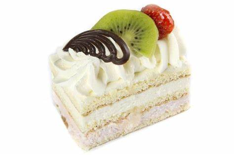

Verse Ingredienten: Onze bakkerij gebruikt alleen de allerbeste en meest verse ingredienten om slagroomgebak te bereiden. Dit begint met de basis: lichte en luchtige cakes die vers uit de oven komen. Ambachtelijke Bereiding: Ons team van getalenteerde bakkers besteedt veel zorg en aandacht aan de bereiding van het slagroomgebak. Ze hebben jarenlange ervaring en vaardigheid opgebouwd, wat resulteert in een consistente en hoogwaardige kwaliteit. Handgemaakte Lagen: Ons slagroomgebak bestaat uit meerdere lagen. We stapelen deze lagen zorgvuldig op en vullen ze met heerlijke vullingen en vers fruit, wat zorgt voor een perfecte balans tussen texturen en smaken. Overvloedige Slagroom: We zijn niet zuinig met onze slagroom. Ons slagroomgebak is rijkelijk bedekt met verse, luchtige slagroom. De slagroom wordt ter plaatse geklopt voor de beste smaak en textuur. Variëteit van Smaak: Onze bakkerij biedt een breed scala aan smaakopties voor ons slagroomgebak. Of je nu van traditionele slagroom houdt, of een meer avontuurlijke smaak wilt proberen, we hebben voor ieder wat wils. Esthetisch Genot: Ons slagroomgebak is niet alleen heerlijk, maar ook visueel aantrekkelijk. We besteden veel zorg aan de presentatie, zodat het gebak er net zo goed uitziet als het smaakt. Toewijding aan Kwaliteit: Kwaliteit staat bij ons voorop. We hanteren strikte kwaliteitsnormen om ervoor te zorgen dat elk stuk slagroomgebak dat onze bakkerij verlaat, aan de hoogste verwachtingen voldoet. Liefde voor Bakken: Bovenal wordt ons slagroomgebak gemaakt met liefde voor het bakken. We zijn gepassioneerd over wat we doen en willen onze klanten laten genieten van de beste smaken en texturen. Kortom, onze bakkerij is trots op het leveren van slagroomgebak van topkwaliteit, en we streven ernaar om elke hap een smaakvolle ervaring te maken. We nodigen je graag uit om het zelf te proberen en te ontdekken waarom ons slagroomgebak als het beste wordt beschouwd.
